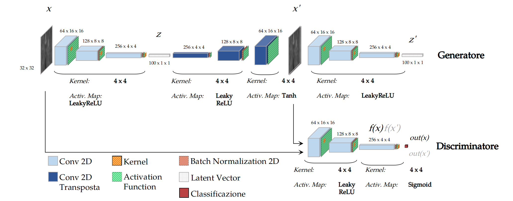
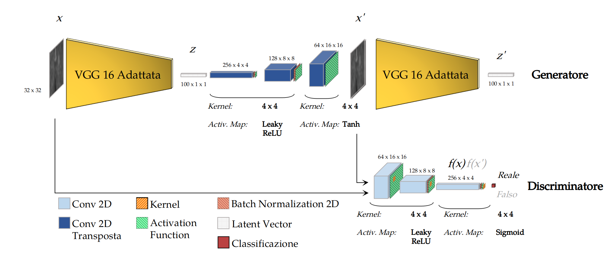
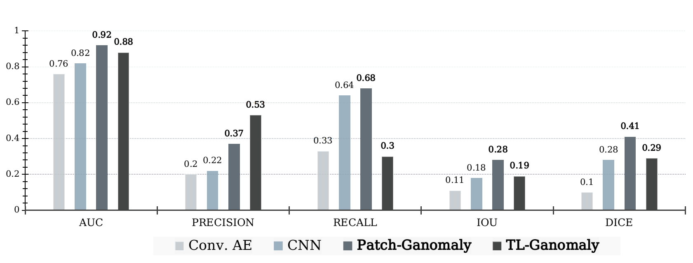

Project information
- Problem: Anomaly Detection
- ML Areas: Image Segmentation
- Learning technique: Semi-Supervised Learning
- Tools: Python, Pytorch, CUDA, Git
- Project date: September 2019 - May 2020
- Project URL: Anomaly detection project
Description
Master's Thesis research: Anomaly detection on images permits to identify an abnormal image. In general, the dataset are very unbalanced, providing very few occurences of abnormal images, for this reason, this project wants to provide a model based on semi-supervised learning: training the model on normal images, it is possible to detect the anomalies as images that are not conform to the normal standard.
Goal: Introducing improvements to the Ganomaly state-of-the-art for Anomaly Detection, in order to achieve a more efficient training for any-dimension images and a more effective performances through the transfer learning technique
Technical Solutions:
- Patch-Ganomaly: Ganomaly architecture trained on patches instead of entire images  ____________________________________________________________________________________________________________________________________________________________________________
- TL-Ganomaly: Patch-Ganomaly architecture enriched with Transfer Learning technique 
Evaluations: AUC, Precision, Recall, IOU, Dice
Results:
 ____________________________________________________________________________________________________________________________________________________________________________